VS20xx 安装及配置
1.下载allegro5MinGW和MSVC
百度链接 提取码amjl
下载下来后你将会得到下面这些
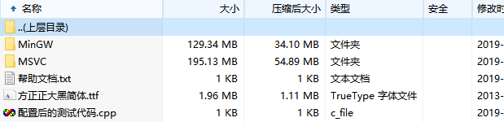
接下来配置vs2019 vs20xx其他版本类似
我们要用的是MSVC这一个文件夹下的 allegro-5.0.10-msvc-11.0
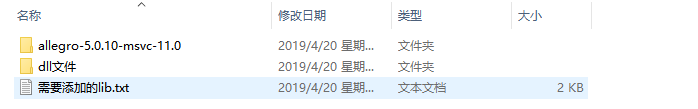
里面包含lib丶include丶bin文件夹
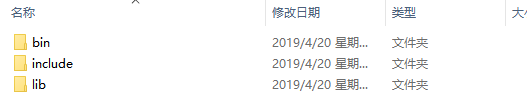
2.配置vs2019
打开vs2019随便新建一个项目 然后选中项目名 鼠标右键你刚刚创建的项目
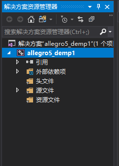
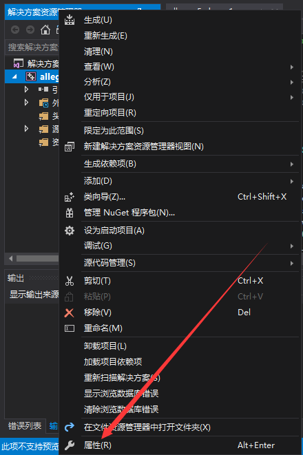
点击属性
在弹出的窗口点击C/C++把刚刚msvc下allegro-5.0.10-msvc-11.0文件夹下面的include文件夹路径拷贝下来 记住是拷贝文件路径，然后把路径填在附加包含目录里 你们填自己的文件路径
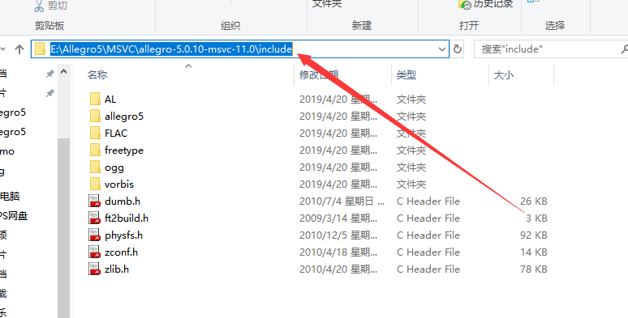
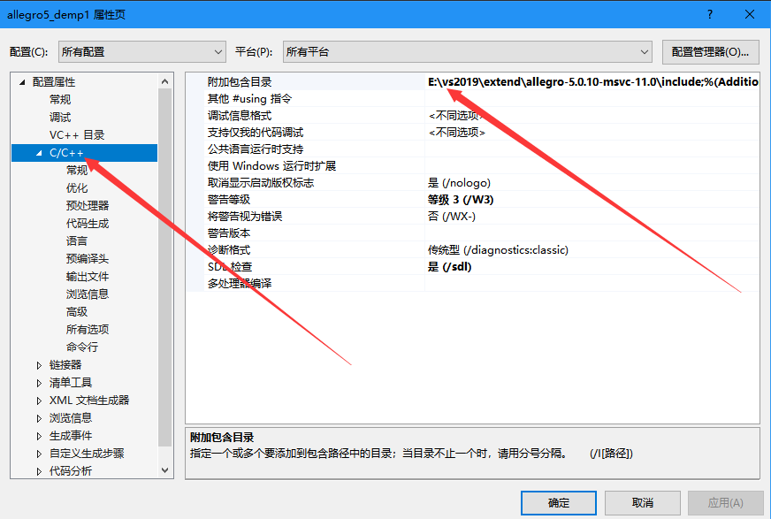
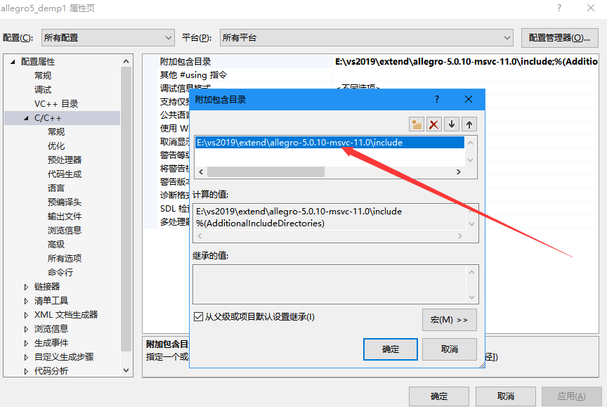
接下来点击连接器 把msvc下allegro-5.0.10-msvc-11.0文件夹下面的lib文件夹路径复制下来 填写到附加目录库中
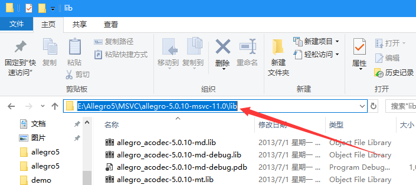
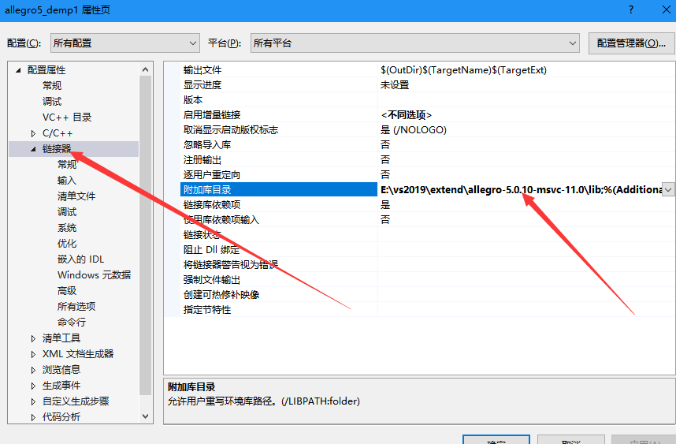
然后打开刚刚解压的msvc文件 ，你会看见一个需要添加的lib.txt文本打开这个文档
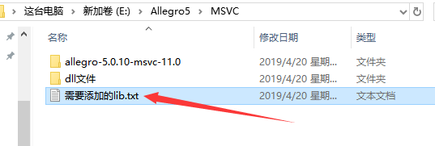
复制红框框的内容，你也可以复制其他类型的
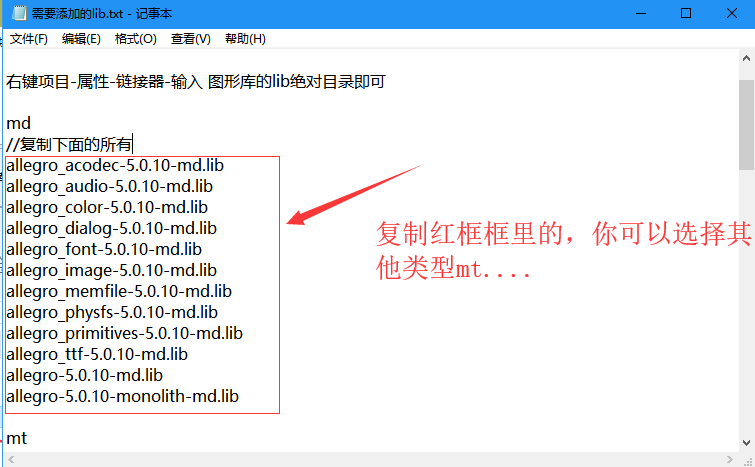
然后回到vs2019点击连接器下的输入选项 ，你会看见下面这些， 把刚刚复制的内容粘贴到附加依赖选项
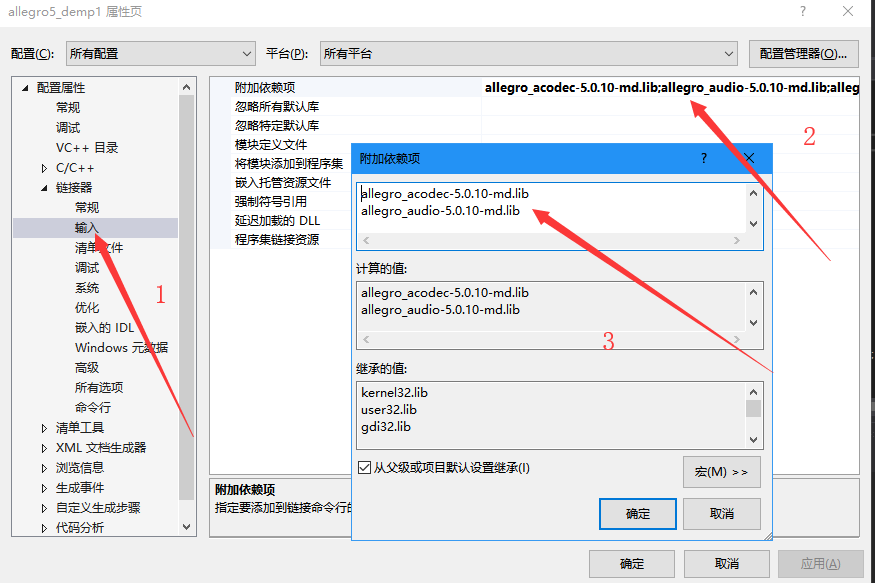
然后点击确定应用及项目部分配置完成，接下来添加文件到你项目的同级目录下
3.项目添加依赖文件
回到vs2019新建一个cpp文件添加以下类容，这里就不用图片展示了
#include <iostream>
#include <allegro5/allegro.h>
#include <allegro5/allegro_native_dialog.h>
int main()
{
ALLEGRO_DISPLAY* display = NULL;
al_init();//初始化
display = al_create_display(640,480);//创建窗口
al_clear_to_color(al_map_rgb(255, 0, 255));//使用红色填充屏幕
al_flip_display();//更新屏幕
al_rest(2.0);//停留2分钟
al_destroy_display(display);//销毁显示器
return 0;
}
编译选择debug或者release，这里我用的release
打开刚刚解压的allegro5文件， msvc文件夹下的dll文件 ，里面有几种类型，打开刚刚我们复制的类型，刚刚用的md文件类型 所以这里打开md_dll文件夹
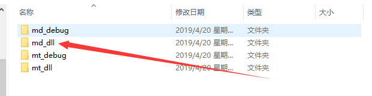
复制所有内容
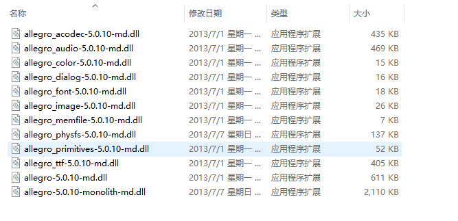
回到vs2019 鼠标右键项目 ->点击在文件资源管理器中打开文件夹
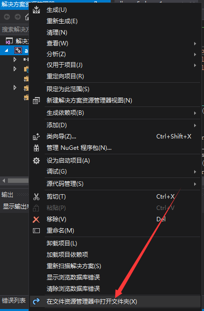
把复制的内容粘贴到如下图所示，根据自己刚刚选择的编译版本打开相应文件夹，里面有你刚刚编译好的exe运行程序，复制的内容要和你程序在同级目录
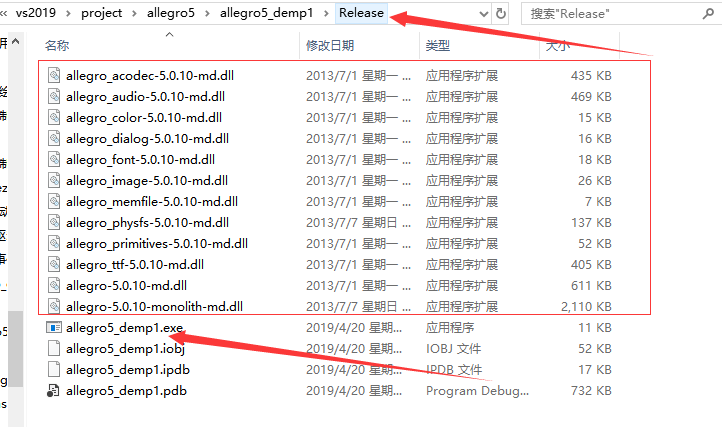
运行一下，好了到这里就配置完成了，mingw版本可以自行尝试，mingw主要在vscode里配置，这个以后出一个教程 下面附运行效果，2秒后程序会自动关闭，后面我在一一讲解代码的内容
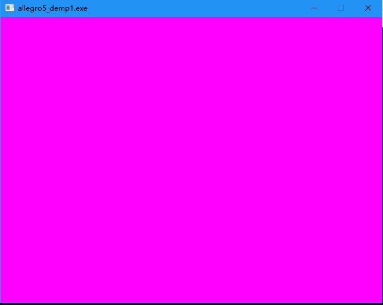